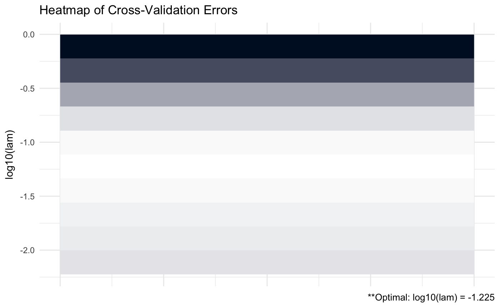

Overview
CVglasso is an R package that estimates a penalized precision matrix via block-wise coordinate descent – also known as the graphical lasso (glasso) algorithm. This package is a simple wrapper around the popular ‘glasso’ package and extends and enhances its capabilities. These enhancements include built-in cross validation and visualizations. A (possibly incomplete) list of functions contained in the package can be found below:
CVglasso()computes the estimated precision matrixplot.CVglasso()produces a heat map or line graph for cross validation errors
Installation
# The easiest way to install is from CRAN
install.packages("CVglasso")
# You can also install the development version from GitHub:
# install.packages("devtools")
devtools::install_github("MGallow/CVglasso")If there are any issues/bugs, please let me know: github. You can also contact me via my website. Pull requests are welcome!
Usage
library(CVglasso)
# generate data from a sparse matrix
# first compute covariance matrix
S = matrix(0.7, nrow = 5, ncol = 5)
for (i in 1:5){
for (j in 1:5){
S[i, j] = S[i, j]^abs(i - j)
}
}
# print oracle precision matrix (shrinkage might be useful)
(Omega = qr.solve(S) %>% round(3))## [,1] [,2] [,3] [,4] [,5]
## [1,] 1.961 -1.373 0.000 0.000 0.000
## [2,] -1.373 2.922 -1.373 0.000 0.000
## [3,] 0.000 -1.373 2.922 -1.373 0.000
## [4,] 0.000 0.000 -1.373 2.922 -1.373
## [5,] 0.000 0.000 0.000 -1.373 1.961# generate 1000 x 5 matrix with rows drawn from iid N_p(0, S)
Z = matrix(rnorm(100*5), nrow = 100, ncol = 5)
out = eigen(S, symmetric = TRUE)
S.sqrt = out$vectors %*% diag(out$values^0.5) %*% t(out$vectors)
X = Z %*% S.sqrt
# calculate sample covariance
Sample = (nrow(X) - 1)/nrow(X)*cov(X)
# print sample precision matrix (perhaps a bad estimate)
(qr.solve(cov(X)) %>% round(5))## [,1] [,2] [,3] [,4] [,5]
## [1,] 1.98092 -1.37801 0.02044 0.14409 -0.02318
## [2,] -1.37801 3.74550 -2.23058 0.20832 -0.00019
## [3,] 0.02044 -2.23058 3.57061 -1.31984 -0.26276
## [4,] 0.14409 0.20832 -1.31984 2.50872 -1.10648
## [5,] -0.02318 -0.00019 -0.26276 -1.10648 1.89862# GLASSO (lam = 0.5)
CVglasso(S = Sample, lam = 0.5)##
##
## Call: CVglasso(S = Sample, lam = 0.5)
##
## Iterations:
## [1] 3
##
## Tuning parameter:
## log10(lam) lam
## [1,] -0.301 0.5
##
## Log-likelihood: -11.84633
##
## Omega:
## [,1] [,2] [,3] [,4] [,5]
## [1,] 1.12773 -0.12503 0.00000 0.00000 0.00000
## [2,] -0.12503 1.19023 -0.29852 0.00000 0.00000
## [3,] 0.00000 -0.29852 1.05989 -0.20545 -0.03029
## [4,] 0.00000 0.00000 -0.20545 1.05189 -0.19723
## [5,] 0.00000 0.00000 -0.03029 -0.19723 1.02795# GLASSO cross validation
CVglasso(X, trace = "none")##
##
## Call: CVglasso(X = X, trace = "none")
##
## Iterations:
## [1] 4
##
## Tuning parameter:
## log10(lam) lam
## [1,] -1.002 0.099
##
## Log-likelihood: -152.14745
##
## Omega:
## [,1] [,2] [,3] [,4] [,5]
## [1,] 1.60512 -0.85185 -0.03552 0.00000 0.00000
## [2,] -0.85185 2.46772 -1.25090 0.00000 0.00000
## [3,] -0.03554 -1.25088 2.29030 -0.75282 -0.24769
## [4,] 0.00000 0.00000 -0.75282 1.87008 -0.76360
## [5,] 0.00000 0.00000 -0.24769 -0.76360 1.55742# produce CV heat map for GLASSO
CVGLASSO = CVglasso(X, trace = "none")
CVGLASSO %>% plot
# produce line graph for CV errors for GLASSO
CVGLASSO %>% plot(type = "heatmap")